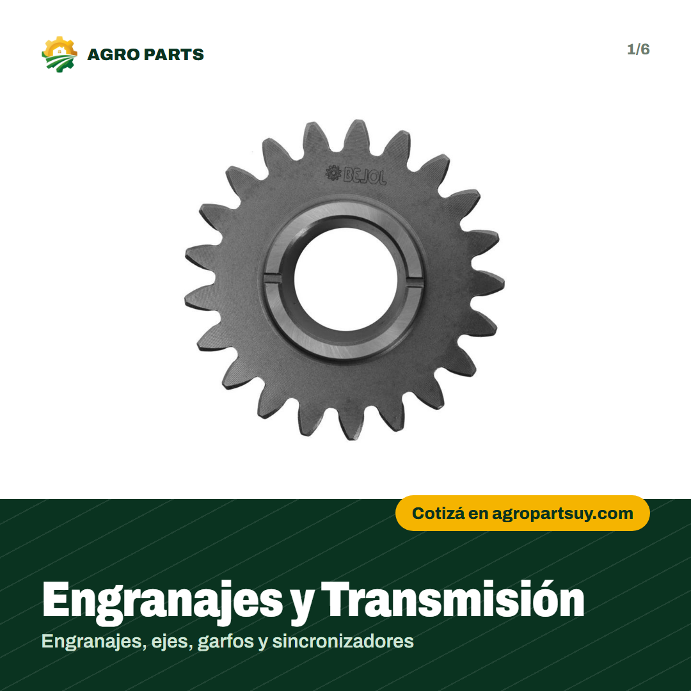
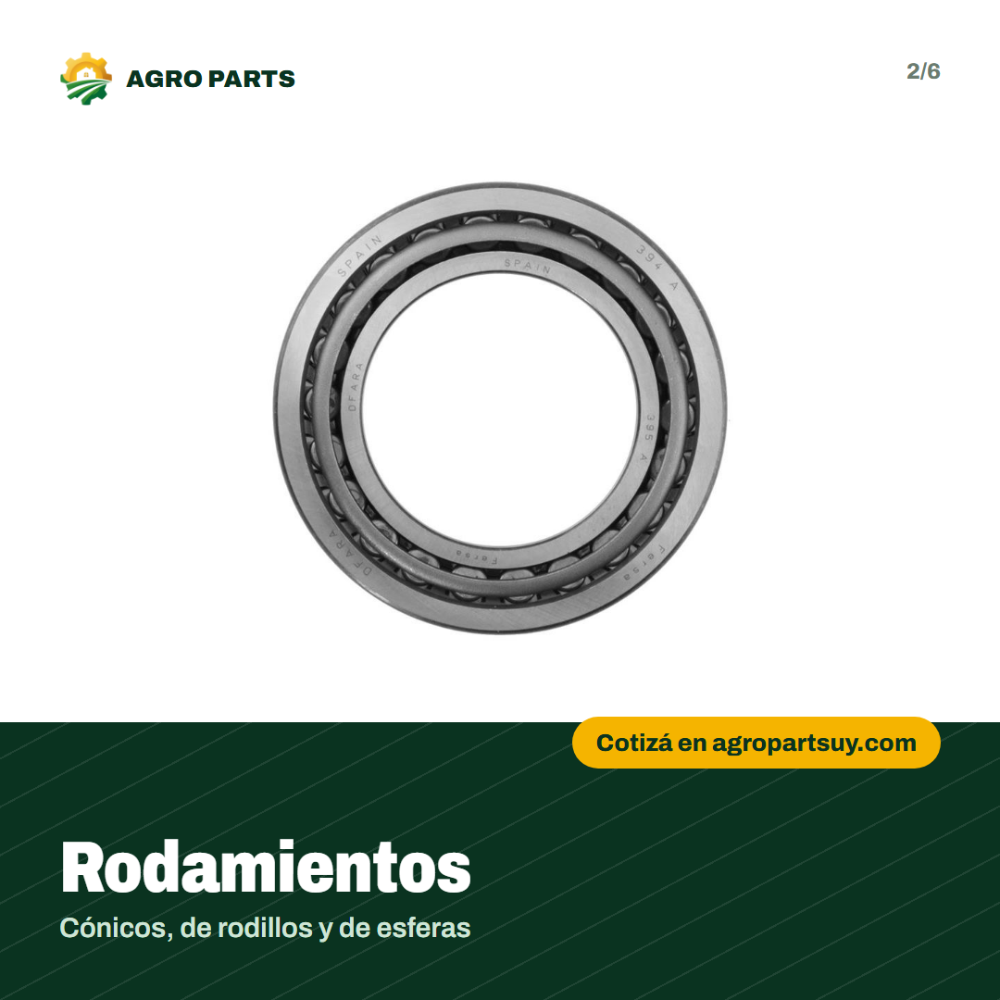
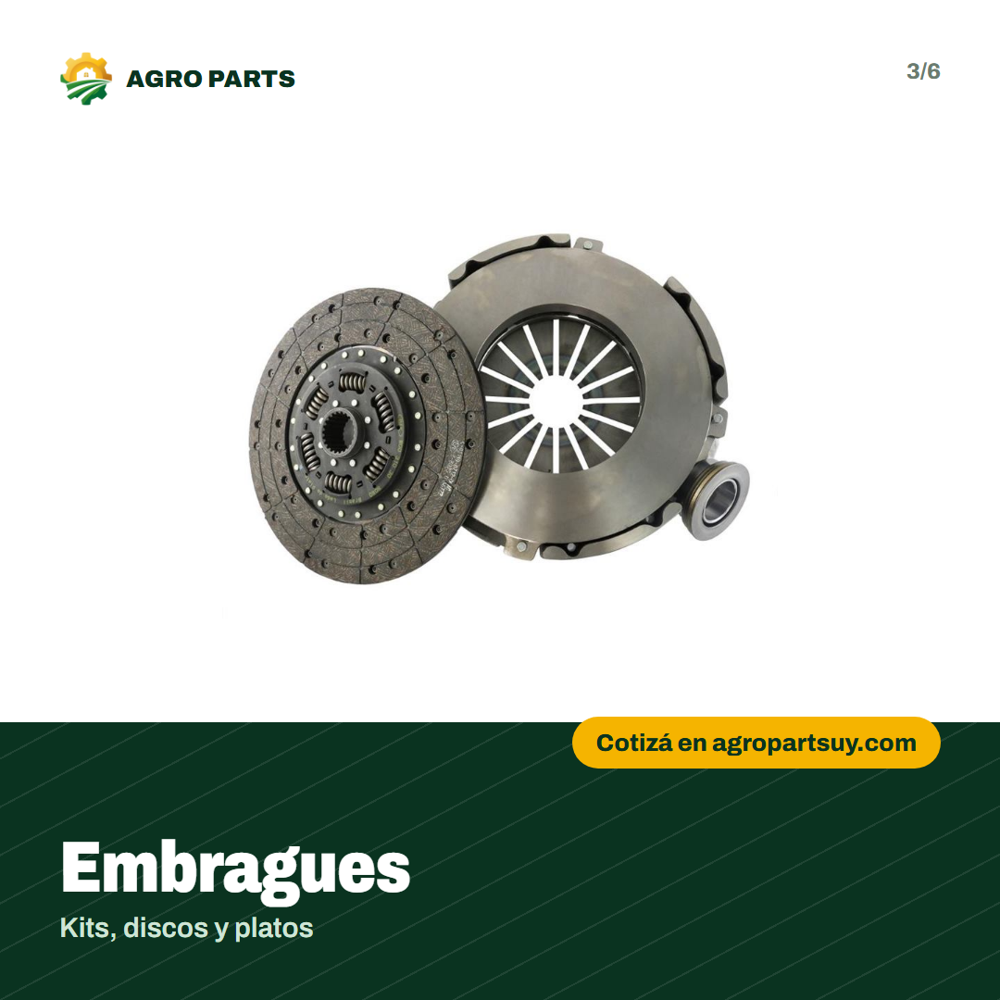
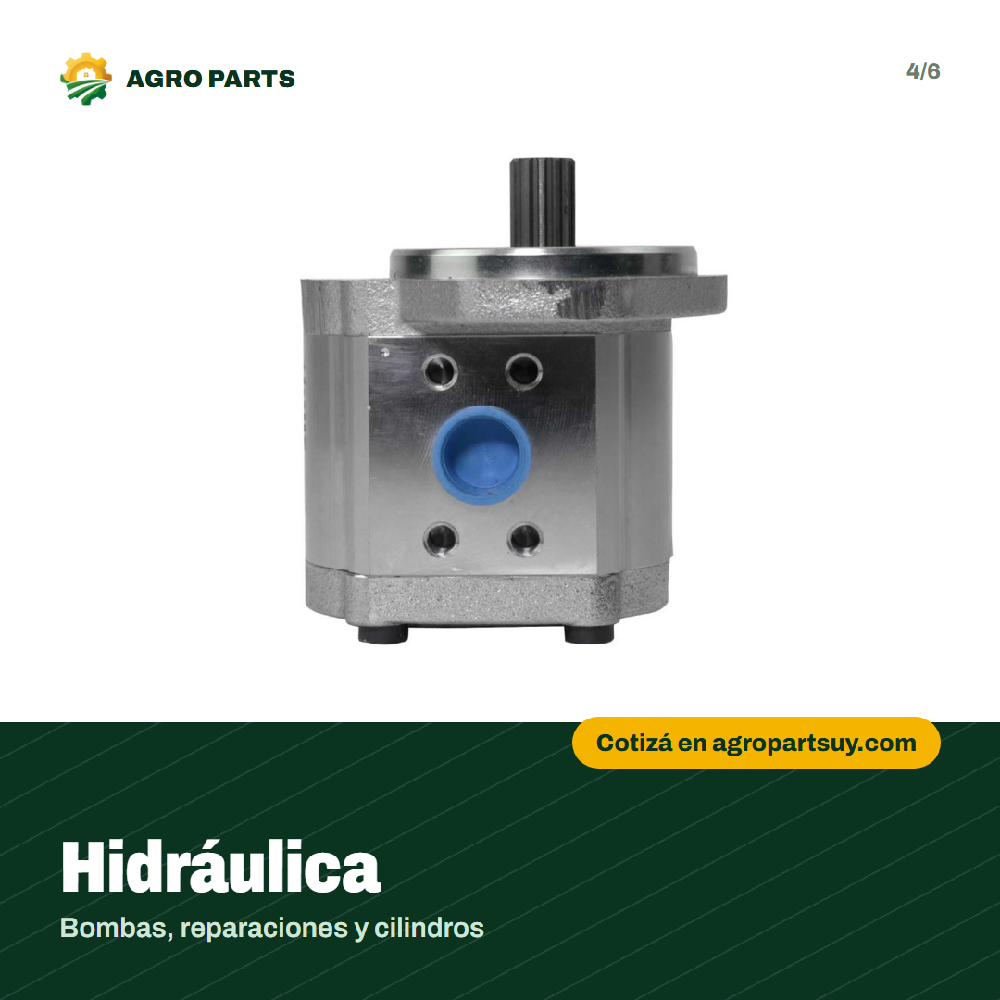
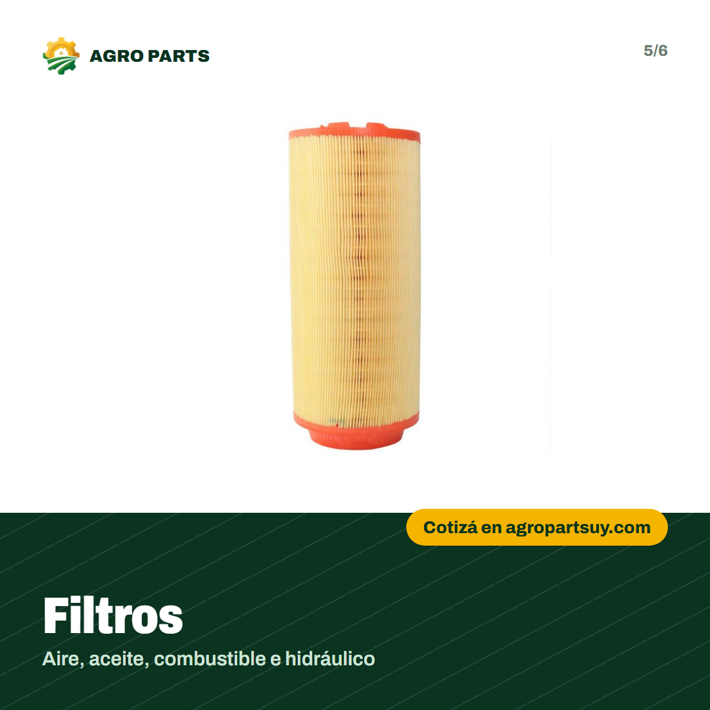
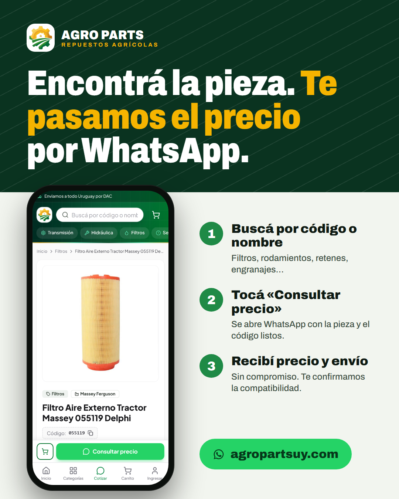
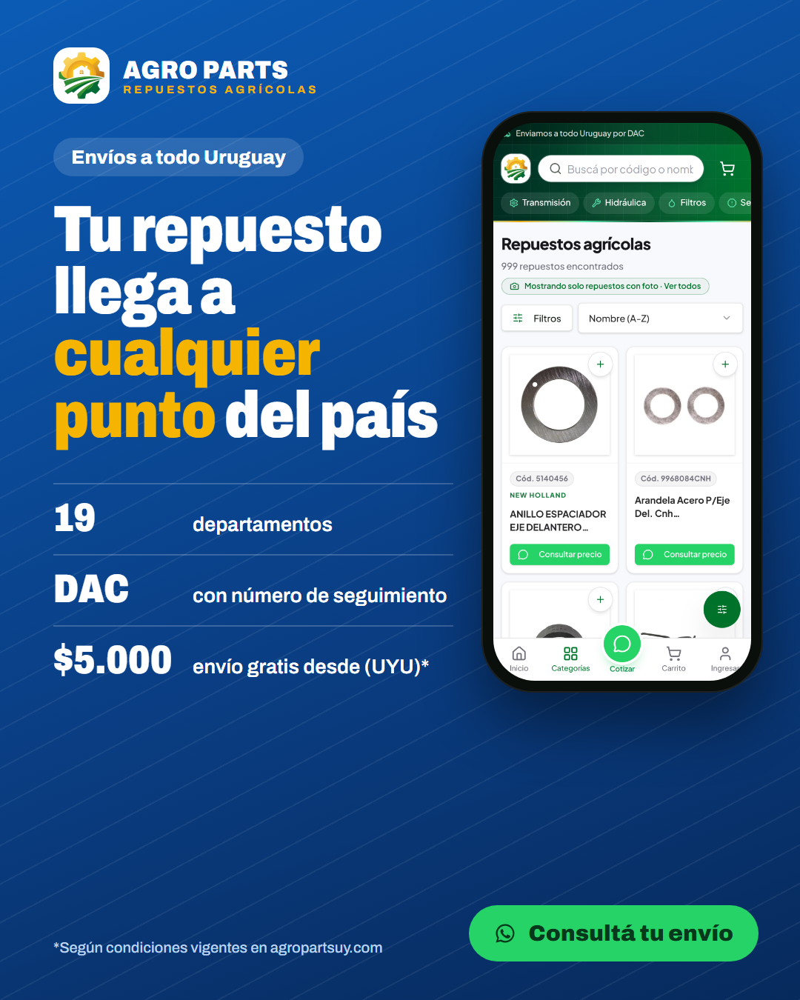
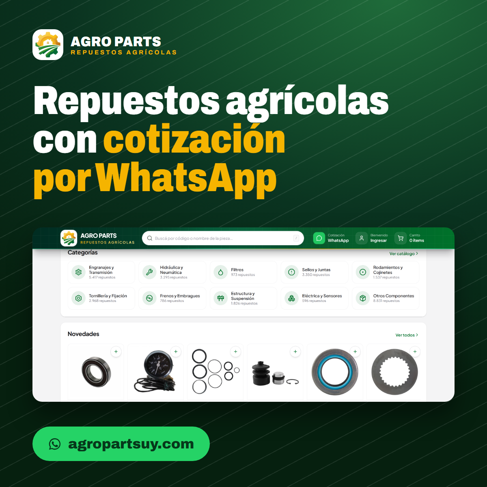
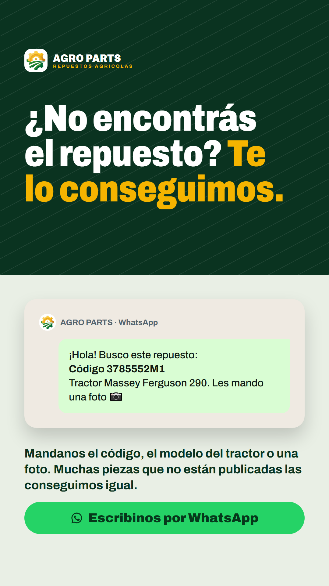

Criativos com telas reais do site, textos prontos em espanhol do Uruguai e a estrutura das campanhas. Todo texto tem botão para copiar; os limites de caracteres do Google já foram conferidos.
Anúncio leva o cliente direto para o WhatsApp e para o site. Estes pontos precisam estar certos antes de colocar dinheiro.
55 39 9942-8130, mas o rodapé mostra (53) 99953-4631. Confirme qual é o certo antes de qualquer campanha: se estiver errado, todo clique pago se perde. Para clientes no Uruguai, um número uruguaio (+598) também passa mais confiança.VITE_SITE_URL=https://agropartsuy.com na Hostinger e faça o redeploy.VITE_GA4_ID e VITE_META_PIXEL_ID na Hostinger. O site já envia «generate_lead» e «Contact» a cada clique no WhatsApp.https://agropartsuy.com/sitemap.xml.Todos estão na pasta marketing/criativos do projeto (e no GitHub). No celular, toque e segure a imagem para salvar.









Configuração: local Uruguay idioma Español rede Pesquisa (desligue «Rede de Display» nas campanhas de pesquisa). Lances: comece com «Maximizar cliques» com teto de CPC e, quando houver 15–30 conversões, troque para «Maximizar conversões».
Quem busca a marca do trator já sabe o que precisa: é o clique mais perto da compra.
| Grupo | Palavras-chave | Página de destino |
|---|---|---|
| Massey Ferguson Títulos extra: Repuestos Massey Ferguson · Massey Ferguson en Uruguay |
"repuestos massey ferguson""repuestos massey ferguson uruguay"[repuestos tractor massey ferguson] |
https://agropartsuy.com/loja?marca=Massey%20Ferguson&utm_source=google&utm_medium=cpc&utm_campaign=marcas |
| Valtra Títulos extra: Repuestos Valtra · Valtra en Uruguay |
"repuestos valtra""repuestos valtra uruguay"[repuestos tractor valtra] |
https://agropartsuy.com/loja?marca=Valtra&utm_source=google&utm_medium=cpc&utm_campaign=marcas |
| John Deere Títulos extra: Repuestos John Deere · John Deere en Uruguay |
"repuestos john deere""repuestos john deere uruguay"[repuestos tractor john deere] |
https://agropartsuy.com/loja?marca=John%20Deere&utm_source=google&utm_medium=cpc&utm_campaign=marcas |
| New Holland Títulos extra: Repuestos New Holland · New Holland en Uruguay |
"repuestos new holland""repuestos new holland uruguay"[repuestos tractor new holland] |
https://agropartsuy.com/loja?marca=New%20Holland&utm_source=google&utm_medium=cpc&utm_campaign=marcas |
| Case IH Títulos extra: Repuestos Case IH · Case IH en Uruguay |
"repuestos case ih""repuestos case ih uruguay"[repuestos tractor case ih] |
https://agropartsuy.com/loja?marca=Case%20IH&utm_source=google&utm_medium=cpc&utm_campaign=marcas |
| Ford Títulos extra: Repuestos Ford · Ford en Uruguay |
"repuestos ford""repuestos ford uruguay"[repuestos tractor ford] |
https://agropartsuy.com/loja?marca=Ford&utm_source=google&utm_medium=cpc&utm_campaign=marcas |
Peças de reposição frequente (filtros, rolamentos, retentores, embreagem).
| Grupo | Palavras-chave | Página de destino |
|---|---|---|
| Filtros | "filtros para tractor""filtro aceite tractor""filtro hidraulico tractor" |
https://agropartsuy.com/loja?categoria=Filtros&utm_source=google&utm_medium=cpc&utm_campaign=tipo_repuesto |
| Rodamientos | "rodamientos tractor""rulemanes tractor""rodamiento conico tractor" |
https://agropartsuy.com/loja?categoria=Rolamentos%20e%20Mancais&utm_source=google&utm_medium=cpc&utm_campaign=tipo_repuesto |
| Retenes y juntas | "retenes tractor""junta tapa de cilindros tractor""kit de juntas tractor" |
https://agropartsuy.com/loja?categoria=Veda%C3%A7%C3%B5es&utm_source=google&utm_medium=cpc&utm_campaign=tipo_repuesto |
| Embrague y frenos | "kit embrague tractor""disco de embrague tractor""plato de embrague tractor" |
https://agropartsuy.com/loja?categoria=Freios%20e%20Embreagens&utm_source=google&utm_medium=cpc&utm_campaign=tipo_repuesto |
| Hidráulica | "bomba hidraulica tractor""cilindro hidraulico tractor""repuestos hidraulico tractor" |
https://agropartsuy.com/loja?categoria=Hidr%C3%A1ulica%20e%20Pneum%C3%A1tica&utm_source=google&utm_medium=cpc&utm_campaign=tipo_repuesto |
| Transmisión | "engranajes tractor""repuestos caja de cambios tractor""repuestos transmision tractor" |
https://agropartsuy.com/loja?categoria=Engrenagens%20e%20Transmiss%C3%A3o&utm_source=google&utm_medium=cpc&utm_campaign=tipo_repuesto |
Busca ampla e quem pesquisa direto pelo código da peça (talleres).
| Grupo | Palavras-chave | Página de destino |
|---|---|---|
| Repuestos agrícolas | "repuestos para tractores""repuestos agricolas uruguay""repuestos tractores uruguay""repuestos cosechadora" |
https://agropartsuy.com/?utm_source=google&utm_medium=cpc&utm_campaign=genericas |
| Por código / talleres | "repuesto por codigo tractor""codigo repuesto tractor""distribuidor repuestos agricolas" |
https://agropartsuy.com/pedido-rapido?utm_source=google&utm_medium=cpc&utm_campaign=codigos |
Aspas = correspondência de frase; colchetes = correspondência exata.
| Texto (25) | Descrição (35) | URL |
|---|---|---|
| Catálogo con fotos 18 | Miles de repuestos con foto 27 | https://agropartsuy.com/loja?utm_source=google&utm_medium=cpc&utm_campaign=sitelink |
| Pedido rápido 13 | Pegá tu lista y cotizá todo junto 33 | https://agropartsuy.com/pedido-rapido?utm_source=google&utm_medium=cpc&utm_campaign=sitelink |
| Cómo comprar 12 | Cotización por WhatsApp en 4 pasos 34 | https://agropartsuy.com/ayuda#como-comprar?utm_source=google&utm_medium=cpc&utm_campaign=sitelink |
| Envíos a Uruguay 16 | Por DAC a los 19 departamentos 30 | https://agropartsuy.com/ayuda#envios?utm_source=google&utm_medium=cpc&utm_campaign=sitelink |
Use os criativos google_paisagem_1200x628, google_quadrado_1200x1200 e os dois logos. Nome da empresa: AGRO PARTS.
Público: Uruguay (todo el país) · «Personas que viven o estuvieron recientemente en este lugar» (no «interesadas») · 25 a 65 años · Advantage+ (automático); revise se Stories e Reels estão incluídos.
Interesses: AgriculturaTractoresMaquinaria agrícolaGanaderíaCosechadoraMassey FergusonJohn DeereNew Holland AgricultureValtraAgronegocios
Objetivo: Interacción → Mensajes → WhatsApp
O cliente fala direto com vocês, que é como a loja vende. Precisa do WhatsApp Business ligado à página do Facebook.
Criativos: feed_02_cotizar_whatsapp, story_02_te_lo_conseguimos, carrusel (6 tarjetas)
Objetivo: Tráfico → Visitas al sitio web
Leva quem ainda está pesquisando para ver as peças com foto. Com o Pixel ligado, alimenta o remarketing.
Criativos: feed_01_catalogo, feed_03_envios_dac, carrusel (6 tarjetas)
Destino: https://agropartsuy.com/loja?utm_source=meta&utm_medium=paid_social&utm_campaign=trafico_catalogo
Objetivo: Ventas o Interacción → WhatsApp
Quem visitou o site e não chamou no WhatsApp. Público pequeno e barato, costuma converter mais.
Criativos: story_01_pedido_rapido, feed_02_cotizar_whatsapp
Grave a tela do celular navegando em agropartsuy.com (gravador de tela do próprio celular) e intercale com imagens reais da peça e do depósito. Pessoas reais da equipe passam mais confiança que banco de imagem.
Três posts por semana mantêm a página ativa, o que ajuda os anúncios a converter: quem clica costuma olhar o perfil antes de chamar.
| Quando | Tema | Imagem | Legenda |
|---|---|---|---|
| Semana 1 Lunes | Presentación | Carrusel de categorías | Somos AGRO PARTS: más de 29.000 repuestos para tractores y cosechadoras, con envíos a todo Uruguay. ¿Qué repuesto estás buscando? 👇 |
| Semana 1 Miércoles | Cómo comprar | feed_02_cotizar_whatsapp | Comprar es simple: buscá la pieza, tocá «Consultar precio» y te respondemos por WhatsApp con precio y envío. |
| Semana 1 Viernes | Envíos | feed_03_envios_dac | Llegamos a los 19 departamentos por DAC, con número de seguimiento. Tu repuesto, donde estés. |
| Semana 2 Lunes | Producto destacado | Foto de un filtro | Cambiar los filtros a tiempo protege el motor y el hidráulico. Tenemos filtros de aire, aceite, combustible e hidráulico para tu tractor. |
| Semana 2 Miércoles | Talleres | story_01_pedido_rapido | ¿Tenés una lista de códigos? En Pedido rápido la pegás y cotizás todo junto. Ideal para talleres. |
| Semana 2 Viernes | Consejo | Foto de rodamiento | Un rodamiento que hace ruido avisa antes de romperse. Revisalo y, si lo necesitás, buscalo por código en agropartsuy.com. |
| Semana 3 Lunes | Marcas | Imagen con logos de marcas (texto) | Massey Ferguson, Valtra, John Deere, New Holland, Case IH, Ford y Agrale. ¿Cuál tenés en el campo? |
| Semana 3 Miércoles | Búsqueda por código | Reel 1 | El código original de la pieza es la forma más rápida de encontrarla. Escribilo en el buscador y listo. |
| Semana 3 Viernes | Te lo conseguimos | story_02_te_lo_conseguimos | ¿No lo encontrás en el sitio? Mandanos una foto por WhatsApp: muchas piezas que no están publicadas las conseguimos igual. |
| Semana 4 Lunes | Producto destacado | Foto de kit de embrague | Kits de embrague, discos y platos para tractores. Consultá por el código de tu modelo. |
| Semana 4 Miércoles | Confianza | Foto del equipo / depósito | Detrás de cada envío hay un equipo que confirma la compatibilidad antes de despachar. Mostrá su cara: genera confianza. |
| Semana 4 Viernes | Llamado a la acción | carrusel_06_cotiza | Más de 29.000 repuestos. Cotizá en minutos en agropartsuy.com 🚜 |
Todos os destinos acima já têm utm_source, utm_medium e utm_campaign, então o Google Analytics separa as visitas por campanha. Testei: o site mantém esses parâmetros.
generate_lead (clique no WhatsApp).Contact como conversão. Na campanha de WhatsApp, a conversão é a conversa iniciada.| Canal | Por dia | O que olhar |
|---|---|---|
| Google · Search Marcas | US$ 6 | Custo por clique no WhatsApp, termos de pesquisa (negative o que não for peça agrícola) |
| Google · Search Tipo + Genéricas | US$ 4 | Quais categorias geram conversa |
| Meta · Clic a WhatsApp | US$ 6 | Custo por conversa iniciada |
| Meta · Remarketing | US$ 2 | Frequência abaixo de 4 por semana |
Depois de 14 dias, mova verba para o que gerou conversas mais baratas e pause o resto. Valores são sugestão para começar; ajuste ao seu caixa.